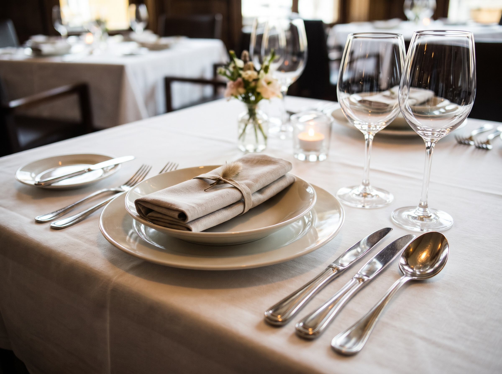
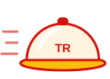
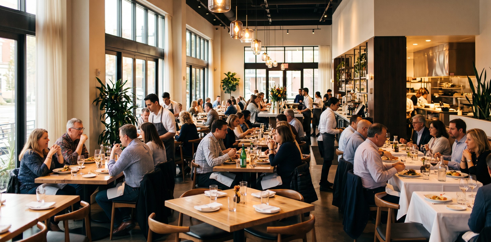
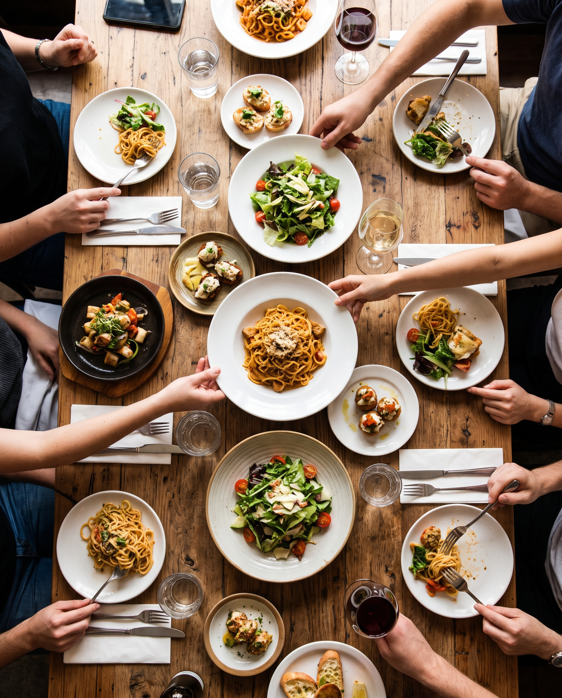

Arrive early
Look up the person you are meeting and get there before they do.

Business dining etiquette for UA students
Interviews, networking events and employer dinners often happen over a meal. This guide shows you what to do before, during and after, so you can focus on the conversation instead of the forks.


An employer who takes you to lunch isn't testing your salad fork. They're watching how you treat people, how calm you stay, and whether you can talk while you eat.
How you carry yourself at a meal is a small preview of how you carry yourself at work. The good news: the rules are few, and you can learn them in an afternoon.
Sources: The US at Work (Kaye).
Self-check quiz
Find out how ready you are for your next business meal. Every answer comes with a short explanation, and nothing is saved or sent anywhere.
Take the quizFollow the meal from start to finish
Ready to practice? Take the ten-question self-check quiz, then tell us what you learned in the survey.
Looking for real events? Check UA Career Services (opens in a new tab) for workshops and employer events, and visit the University of Arizona homepage (opens in a new tab) for campus news.
